Chapitre 9 Exercice de synthèse
9.1 Enoncé
Créer un un sous-jeu de données constitué des 15 premières colonnes de la base Insee restreint à la région des Pays-de-la-Loire (code REG 52). Supprimer les modalités inutiles des variables qualitatives.
9.1.1 Partie 1
L’objectif est de bien décrire la variable de population issue du recensement 2014.
Produire un graphique simple pour décrire la distribution.
Calculer les statistiques simples décrivant cette variable.
On a des indicateurs de tendance centrale qui sont très différents. Pourquoi ?
Quel est le nombre de communes de moins de 1000 habitants ?
Produire un graphique plus riche que le précédent.
Produire un graphique comparant les distributions entre les départements des Pays-de-la-Loire.
9.1.2 Partie 2
En 2014, la population communale moyenne en Pays-de-la-Loire est-elle upérieure ou inférieure à la population communale moyenne nationale ?
Cette différence est-elle significative au seuil de 5% ?
Aide : Réfléchir aux questions :
un ou deux échantillons ?
test paramétrique ou non paramétrique ?
La population moyenne diffère-t-elle entre PDL et Centre-val-de-Loire ?
9.1.3 Partie 3
Combien de communes par département dans les Pays-de-Loire ?
En 2014, quelle est la population communale moyenne par département dans la région ?
Est-ce que la ventilation des communes dans les catégories de ZAU diffère selon les départements de la région PDL ?
9.1.4 Partie 4
Y a-t-il un lien significatif entre la densité de population et le taux d’emploi en région PDL ? Si oui, est-il positif ou négatif ?
9.2 Corrigé
Les questions étant ouvertes, il y a de nombreuses façons d’y répondre. Ci-dessous certaines d’entre elles.
Créer un sous-jeu de données constitué des 15 premières colonnes de la base Insee restreint à la région des Pays-de-la-Loire (code REG 52)
## CODGEO LIBGEO REG DEP
## 44001 : 1 Allonnes : 2 52 :1502 72 :375
## 44002 : 1 Avrill\xe9 : 2 01 : 0 49 :363
## 44003 : 1 Beaumont-Pied-de-Boeuf: 2 02 : 0 85 :282
## 44004 : 1 Ch\xe9ranc\xe9 : 2 03 : 0 53 :261
## 44005 : 1 Chang\xe9 : 2 04 : 0 44 :221
## 44006 : 1 Cherr\xe9 : 2 11 : 0 01 : 0
## (Other):1496 (Other) :1490 (Other): 0 (Other): 0
## ZAU
## 112 - Couronne d'un grand p\xf4le :535
## 300 - Autre commune multipolaris\xe9e :386
## 120 - Multipolaris\xe9e des grandes aires urbaines :186
## 400 - Commune isol\xe9e hors influence des p\xf4les:143
## 111 - Grand p\xf4le (plus de 10 000 emplois) :108
## 221 - Petit p\xf4le (de 1 500 \xe0 5 000 emplois) : 69
## (Other) : 75
## ZE P14_POP P09_POP
## 5213 - Le Mans :230 Min. : 12 Min. : 17
## 5205 - Angers :182 1st Qu.: 495 1st Qu.: 481
## 5209 - Laval :157 Median : 1029 Median : 978
## 5203 - Nantes :153 Mean : 2720 Mean : 2608
## 5218 - La Roche-sur-Yon:106 3rd Qu.: 2353 3rd Qu.: 2243
## 5207 - Saumur : 86 Max. :298029 Max. :282047
## (Other) :588 NA's :145 NA's :145
## SUPERF NAIS0914 DECE0914 P14_MEN
## Min. : 0.20 Min. : 1.0 Min. : 0.0 Min. : 5.45
## 1st Qu.: 11.76 1st Qu.: 33.0 1st Qu.: 15.0 1st Qu.: 196.52
## Median : 17.96 Median : 69.0 Median : 31.0 Median : 402.51
## Mean : 23.64 Mean : 166.3 Mean : 113.1 Mean : 1183.32
## 3rd Qu.: 28.53 3rd Qu.: 147.0 3rd Qu.: 107.0 3rd Qu.: 952.00
## Max. :323.98 Max. :19814.0 Max. :9968.0 Max. :155272.72
## NA's :145 NA's :145 NA's :145 NA's :145
## NAISD15 DECESD15 P14_LOG
## Min. : 0.00 Min. : 0.00 Min. : 11.45
## 1st Qu.: 5.00 1st Qu.: 3.00 1st Qu.: 246.94
## Median : 12.00 Median : 7.00 Median : 483.02
## Mean : 30.99 Mean : 24.96 Mean : 1427.59
## 3rd Qu.: 26.00 3rd Qu.: 23.00 3rd Qu.: 1108.68
## Max. :4011.00 Max. :2146.00 Max. :171979.65
## NA's :145 NA's :145 NA's :145On a toujours les anciens codes régions et départements qui sont désormais inutiles.
## CODGEO LIBGEO DEP
## 44001 : 1 Allonnes : 2 44:221
## 44002 : 1 Avrill\xe9 : 2 49:363
## 44003 : 1 Beaumont-Pied-de-Boeuf: 2 53:261
## 44004 : 1 Ch\xe9ranc\xe9 : 2 72:375
## 44005 : 1 Chang\xe9 : 2 85:282
## 44006 : 1 Cherr\xe9 : 2
## (Other):1496 (Other) :1490
## ZAU
## 112 - Couronne d'un grand p\xf4le :535
## 300 - Autre commune multipolaris\xe9e :386
## 120 - Multipolaris\xe9e des grandes aires urbaines :186
## 400 - Commune isol\xe9e hors influence des p\xf4les:143
## 111 - Grand p\xf4le (plus de 10 000 emplois) :108
## 221 - Petit p\xf4le (de 1 500 \xe0 5 000 emplois) : 69
## (Other) : 75
## ZE P14_POP P09_POP
## 5213 - Le Mans :230 Min. : 12 Min. : 17
## 5205 - Angers :182 1st Qu.: 495 1st Qu.: 481
## 5209 - Laval :157 Median : 1029 Median : 978
## 5203 - Nantes :153 Mean : 2720 Mean : 2608
## 5218 - La Roche-sur-Yon:106 3rd Qu.: 2353 3rd Qu.: 2243
## 5207 - Saumur : 86 Max. :298029 Max. :282047
## (Other) :588 NA's :145 NA's :145
## SUPERF NAIS0914 DECE0914 P14_MEN
## Min. : 0.20 Min. : 1.0 Min. : 0.0 Min. : 5.45
## 1st Qu.: 11.76 1st Qu.: 33.0 1st Qu.: 15.0 1st Qu.: 196.52
## Median : 17.96 Median : 69.0 Median : 31.0 Median : 402.51
## Mean : 23.64 Mean : 166.3 Mean : 113.1 Mean : 1183.32
## 3rd Qu.: 28.53 3rd Qu.: 147.0 3rd Qu.: 107.0 3rd Qu.: 952.00
## Max. :323.98 Max. :19814.0 Max. :9968.0 Max. :155272.72
## NA's :145 NA's :145 NA's :145 NA's :145
## NAISD15 DECESD15 P14_LOG
## Min. : 0.00 Min. : 0.00 Min. : 11.45
## 1st Qu.: 5.00 1st Qu.: 3.00 1st Qu.: 246.94
## Median : 12.00 Median : 7.00 Median : 483.02
## Mean : 30.99 Mean : 24.96 Mean : 1427.59
## 3rd Qu.: 26.00 3rd Qu.: 23.00 3rd Qu.: 1108.68
## Max. :4011.00 Max. :2146.00 Max. :171979.65
## NA's :145 NA's :145 NA's :1459.2.1 Partie 1
Objectif : bien décrire la variable population communale (P14_POP)
Quelle est la population moyenne des communes de la région ?
## [1] 2720Quelle est la la médiane ?
## [1] 1029On a deux indicateurs de tendance centrale qui sont très différents. Pourquoi ?
Quel est le nombre de communes de moins de 1000 habitants ?
## [1] 664L’histogramme de base …
graphique <- ggplot (data = pdl, aes (x = P14_POP)) +
geom_histogram () +
geom_vline (xintercept = pop_med_pdl, color = 'orange') +
geom_vline (xintercept = pop_moy_pdl, color = 'green')
graphique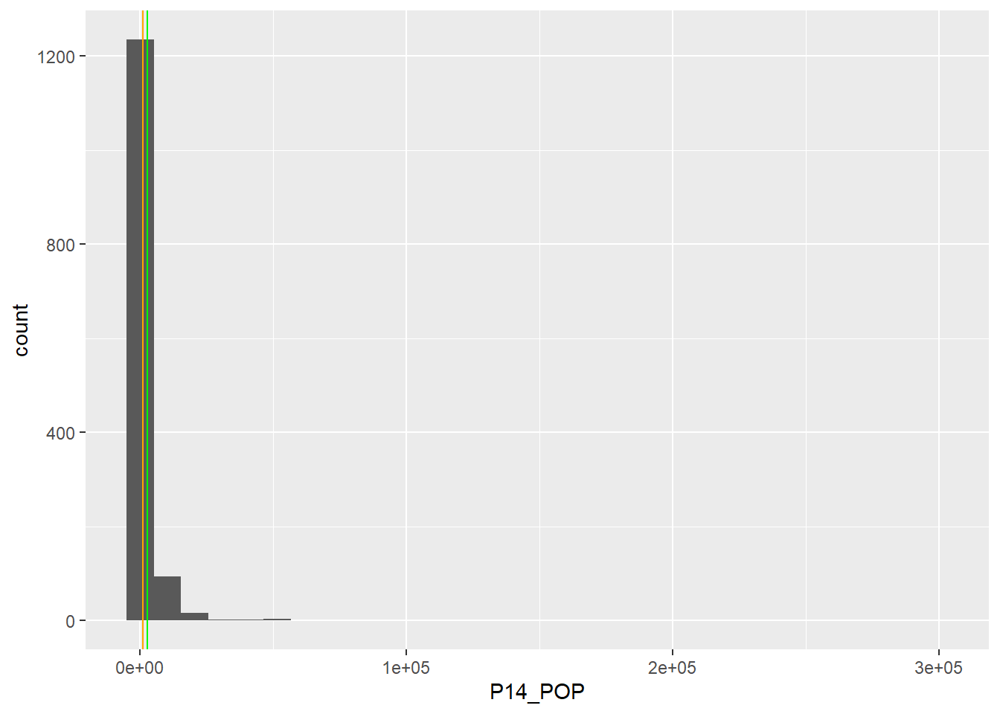
… n’est pas bien lisible. Un peu de mise en forme s’impose.
graphique <- graphique +
scale_x_continuous (trans = 'log10',
labels = function(x) format(x, big.mark = " ", scientific = F),
breaks = c(10, 100, 1000, 10000, 100000)) +
xlab ('Population, échelle log') +
ylab ('Nombre de communes')
graphique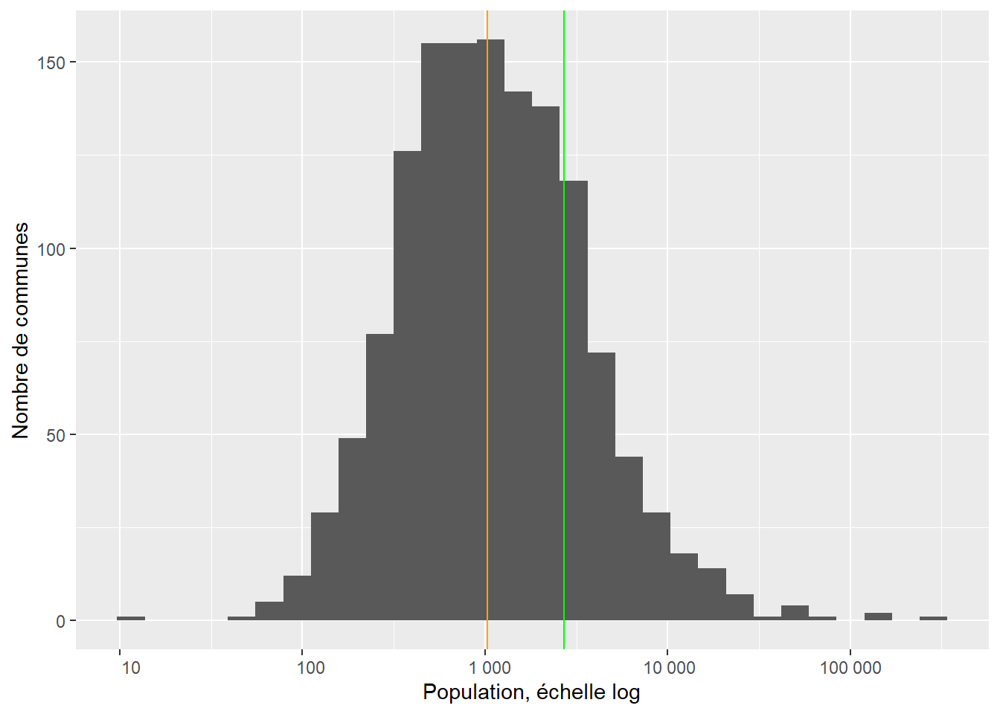
On peut encore rendre le graphique plus “auto-porteur”.
graphique <- graphique +
annotate (geom = 'text', x = pop_med_pdl-200, y = 50,
label = paste ('Médiane', ':', pop_med_pdl, 'hab.'),
angle = 90, color = 'orange') +
annotate (geom = 'text', x = pop_moy_pdl-500, y = 50,
label = paste ('Moyenne', ':', pop_moy_pdl, 'hab.'),
angle = 90, color = 'green')
graphique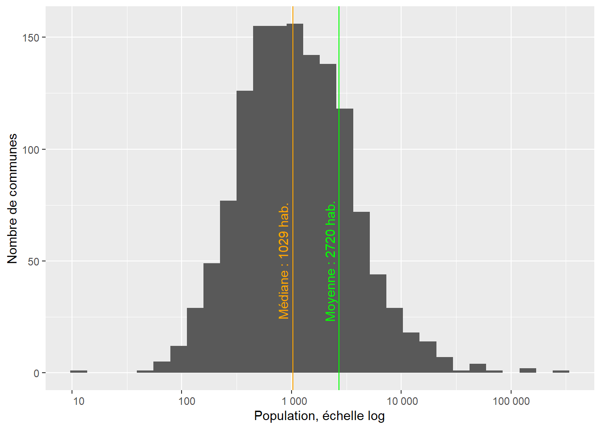
Produire un graphique comparant les distributions entre les départements des Pays-de-la-Loire
medianes <- pdl %>%
group_by (DEP) %>%
summarise (pop_med = median (P14_POP, na.rm = T))
pdl <- inner_join (x = pdl, y = medianes)## Joining, by = "DEP"ggplot (data = pdl, aes (x = fct_reorder (DEP, pop_med), y = P14_POP)) +
geom_boxplot (fill = 'orange') +
scale_y_continuous (trans = 'log10',
breaks = c(10, 100, 1000, 10000, 100000),
labels = function(x) format(x, big.mark = " ", scientific = FALSE)) +
xlab ('Département') +
ylab ('Population') +
ggtitle ('Région Pays-de-la-Loire')## Warning: Removed 145 rows containing non-finite values (stat_boxplot).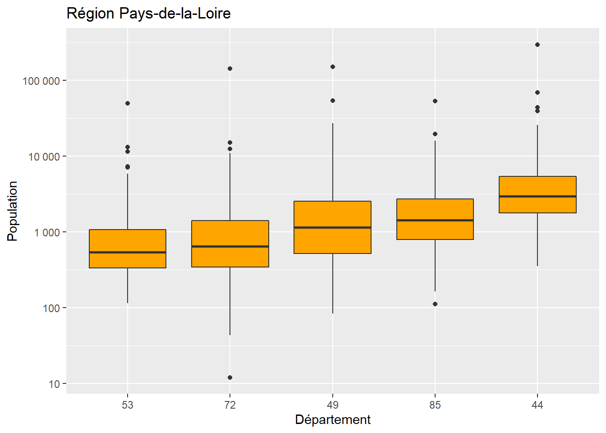
9.2.2 Partie 2
La population moyenne en Pays-de-la-Loire diffère-t-elle de la moyenne nationale ?
## [1] 1837Cette différence est-elle significative au seuil de 5% ? Réfléchir aux questions : - un ou deux échantillons ? - test paramétrique ou non paramétrique ?
On peut déjà comparer graphique les distributions PDL et hors PDL
dat <- dat %>%
mutate (groupe = ifelse (REG == '52', 'PDL', 'Hors_PDL'))
ggplot (data = dat, aes (x = P14_POP, group = groupe, fill = groupe)) +
geom_density (alpha = 0.5) +
scale_x_continuous (trans = 'log10', labels = function(x) format (x, big.mark = " ", scientific = F)) +
xlab ('Population, échelle log') +
ylab ('Densité')## Warning: Transformation introduced infinite values in continuous x-axis## Warning: Removed 827 rows containing non-finite values (stat_density).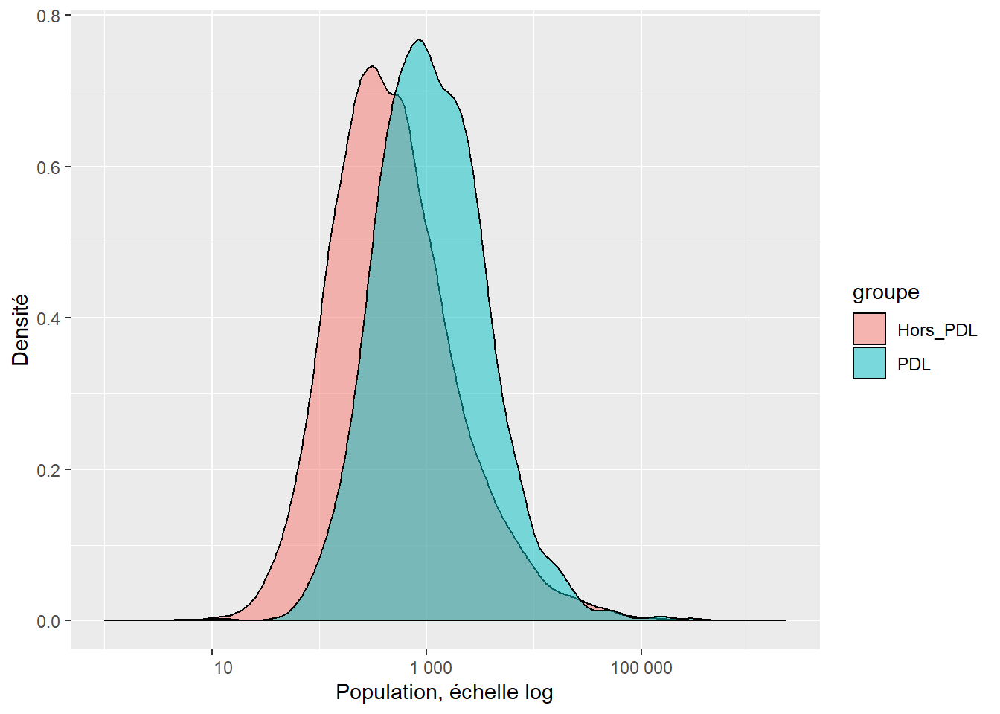
Alors, un ou deux échantillons ?
Si l’on considère 2 échantillons :
##
## Two Sample t-test
##
## data: P14_POP by groupe
## t = -2.2175, df = 35866, p-value = 0.0266
## alternative hypothesis: true difference in means is not equal to 0
## 95 percent confidence interval:
## -1727.6282 -106.4727
## sample estimates:
## mean in group Hors_PDL mean in group PDL
## 1802.797 2719.847##
## Welch Two Sample t-test
##
## data: P14_POP by groupe
## t = -3.0193, df = 1572.4, p-value = 0.002575
## alternative hypothesis: true difference in means is not equal to 0
## 95 percent confidence interval:
## -1512.814 -321.287
## sample estimates:
## mean in group Hors_PDL mean in group PDL
## 1802.797 2719.847##
## Wilcoxon rank sum test with continuity correction
##
## data: P14_POP by groupe
## W = 14420160, p-value < 2.2e-16
## alternative hypothesis: true location shift is not equal to 0Si l’on considère 1 échantillon :
##
## One Sample t-test
##
## data: pdl$P14_POP
## t = 3.0164, df = 1356, p-value = 0.002605
## alternative hypothesis: true mean is not equal to 1837
## 95 percent confidence interval:
## 2145.694 3294.001
## sample estimates:
## mean of x
## 2719.847##
## Wilcoxon signed rank test with continuity correction
##
## data: pdl$P14_POP
## V = 343305, p-value = 4.264e-16
## alternative hypothesis: true location is not equal to 1837On peut faire plein de tests ; à chaque fois R donne un résultat, mais le(s)quel(s) choisir ?
Ici la moyenne nationale n’est pas calculée sur un échantillon : elle l’est sur l’exhaustivité des communes. C’est donc la moyenne sur la population. Notre problème est donc la comparaison de la moyenne d’un échantillon unique avec la moyenne de la population.
Comme les distributions sont très asymétriques donc non gaussiennes, on ne peut pas lire les tests de Student. C’est donc le test de Wilcoxon qui nous indique une différence significative au seuil de 5%. Conclusion : Les communes de la région comptent en moyenne significativement plus d’habitants que celles de la France entière. Il est peu probable qu’il s’agisse d’un effet du hasard, donc les populations des communes des PDL ne sont pas distribuées comme celles des autres communes de France.
La population moyenne diffère-t-elle entre PDL et Centre-val-de-Loire ?
Traduire : Si je regroupe les communes des PDL + de CVDL (1502 + 1842) puis que je répartis aléatoirement ces communes dans deux groupes, est-il possible que par un effet du hasard, les distributions des deux groupes diffèrent autant que diffèrent celles observées dans les deux régions ?
Centre-val-de-Loire : code 24
cvdl <- dat %>%
select (1:15) %>%
filter (REG == "24")
pop_moy_cvdl <- cvdl %>%
pull (P14_POP) %>%
mean (na.rm = T) %>%
round ()
pop_med_cvdl <- cvdl %>%
pull (P14_POP) %>%
median (na.rm = T) %>%
round ()A quoi ressemble la distribution en Centre-val-de-Loire ?
ggplot (data = cvdl, aes (x = P14_POP)) +
geom_histogram () +
geom_vline (xintercept = pop_med_cvdl, color = 'orange') +
geom_vline (xintercept = pop_moy_cvdl, color = 'green') +
scale_x_continuous (trans = 'log10',
labels = function (x) format(x, big.mark = " ", scientific = F),
breaks = c (10, 100, 1000, 10000, 100000)) +
xlab ('Population, échelle log') +
ylab ('Nombre de communes') +
annotate (geom = 'text', x = pop_med_cvdl-200, y = 50,
label = paste ('Médiane', ':', pop_med_cvdl, 'hab.'),
angle = 90, color = 'orange') +
annotate (geom = 'text', x = pop_moy_cvdl-500, y = 50,
label = paste ('Moyenne', ':', pop_moy_cvdl, 'hab.'),
angle = 90, color = 'green')
Tester la significativité
##
## Wilcoxon rank sum test with continuity correction
##
## data: P14_POP by REG
## W = 824661, p-value < 2.2e-16
## alternative hypothesis: true location shift is not equal to 0Pas de surprise, la différence est très significative. A noter, que “p-value < 2.2e-16” est un message qui apparaît souvent : c’est une valeur “plancher” et il ne sert à rien d’aller voir plus loin au microscope des valeurs encore plus faibles.
9.2.3 Partie 3
Combien de communes par département dans les Pays-de-Loire ?
##
## 44 49 53 72 85
## 221 363 261 375 282Quelle est la population communale moyenne par département dans la région ?
pop_com_moy_dept <- pdl %>% group_by (DEP) %>%
summarise (pop_moy_dept = round (mean (P14_POP, na.rm = T)))
pop_com_moy_dept ## # A tibble: 5 x 2
## DEP pop_moy_dept
## <fct> <dbl>
## 1 44 6352
## 2 49 3224
## 3 53 1192
## 4 72 1546
## 5 85 2461Est-ce que la ventilation des communes dans les catégories de ZAU diffère selon les départements de la région PDL ?
croisement <- table (pdl$DEP, pdl$ZAU)
DEP_vs_ZAU <- croisement %>%
as.data.frame () %>%
spread (key = Var1, value = Freq) %>%
rename (ZAU = Var2)
DEP_vs_ZAU## ZAU 44 49 53 72 85
## 1 111 - Grand p\xf4le (plus de 10 000 emplois) 40 22 7 27 12
## 2 112 - Couronne d'un grand p\xf4le 102 166 65 157 45
## 3 120 - Multipolaris\xe9e des grandes aires urbaines 26 31 20 59 50
## 4 211 - Moyen p\xf4le (5 000 \xe0 10 000 emplois) 8 2 4 1 8
## 5 212 - Couronne d'un moyen p\xf4le 12 5 21 2 4
## 6 221 - Petit p\xf4le (de 1 500 \xe0 5 000 emplois) 6 27 5 14 17
## 7 222 - Couronne d'un petit p\xf4le 0 0 4 4 0
## 8 300 - Autre commune multipolaris\xe9e 27 83 80 90 106
## 9 400 - Commune isol\xe9e hors influence des p\xf4les 0 27 55 21 40## Warning in chisq.test(croisement): Chi-squared approximation may be
## incorrect##
## Pearson's Chi-squared test
##
## data: croisement
## X-squared = 316.14, df = 32, p-value < 2.2e-16Problème : il y a dans certaines cases du tableau de contingence des effectifs inférieurs à 5. On va doc créer des regroupements :
- 111 et 112 (grands pôles)
- 120 et 300 (multipolarisées)
- 211 212 221 22 et 400 (rural ou petits pôles)
## [1] "111 - Grand p\xf4le (plus de 10 000 emplois)"
## [2] "112 - Couronne d'un grand p\xf4le"
## [3] "120 - Multipolaris\xe9e des grandes aires urbaines"
## [4] "211 - Moyen p\xf4le (5 000 \xe0 10 000 emplois)"
## [5] "212 - Couronne d'un moyen p\xf4le"
## [6] "221 - Petit p\xf4le (de 1 500 \xe0 5 000 emplois)"
## [7] "222 - Couronne d'un petit p\xf4le"
## [8] "300 - Autre commune multipolaris\xe9e"
## [9] "400 - Commune isol\xe9e hors influence des p\xf4les"pdl <- pdl %>%
mutate (ZAU_regroupees = fct_collapse (ZAU, 'Grand pôle' = levels (pdl$ZAU)[1:2],
'Multipolarisées' = levels (pdl$ZAU)[c(3,8)],
'Rurales et petits pôles' = levels (pdl$ZAU)[c(4:7,9)]))
croisement <- table (pdl$DEP, pdl$ZAU_regroupees)
DEP_vs_ZAU_regroupees <- croisement %>%
as.data.frame () %>%
spread (key = Var1, value = Freq) %>%
rename (ZAU = Var2)
DEP_vs_ZAU_regroupees## ZAU 44 49 53 72 85
## 1 Grand pôle 142 188 72 184 57
## 2 Multipolarisées 53 114 100 149 156
## 3 Rurales et petits pôles 26 61 89 42 69##
## Pearson's Chi-squared test
##
## data: croisement
## X-squared = 174.29, df = 8, p-value < 2.2e-16Il y a bien un lien enter les variables ZAU_regroupees et DEP. Si l’on veut en savoir plus on peut comparer les effectifs observés dans le tableau de contingence aux effectifs attendus si les variables étaient indépendantes l’une de l’autre.
predict <- t (round (test$expected)) %>% as.data.frame ()
names (predict) = paste0 (names (predict), 'p')
prov <- bind_cols (x = DEP_vs_ZAU_regroupees, y = predict)
prov## ZAU 44 49 53 72 85 44p 49p 53p 72p 85p
## 1 Grand pôle 142 188 72 184 57 95 155 112 161 121
## 2 Multipolarisées 53 114 100 149 156 84 138 99 143 107
## 3 Rurales et petits pôles 26 61 89 42 69 42 69 50 72 549.2.4 Partie 4
Y a-t-il un lien entre la densité de population et le taux d’emploi en région PDL ?
On crée un sous-jeu de données ad hoc.
data_p4 <- dat %>%
select (1:15, P09_EMPLT) %>%
filter (REG == '52') %>%
mutate (taux_emploi = P09_EMPLT / P09_POP,
densite_pop = P14_POP / SUPERF)
summary(data_p4$taux_emploi)## Min. 1st Qu. Median Mean 3rd Qu. Max. NA's
## 0.00979 0.13147 0.18493 0.24570 0.29610 1.59801 145Avant de regarder le lien entre les deux variables, on les examine chacune à leur tour.
ggplot (data = data_p4, aes (x = taux_emploi)) +
geom_histogram () +
scale_x_continuous (limits = c(0, 1))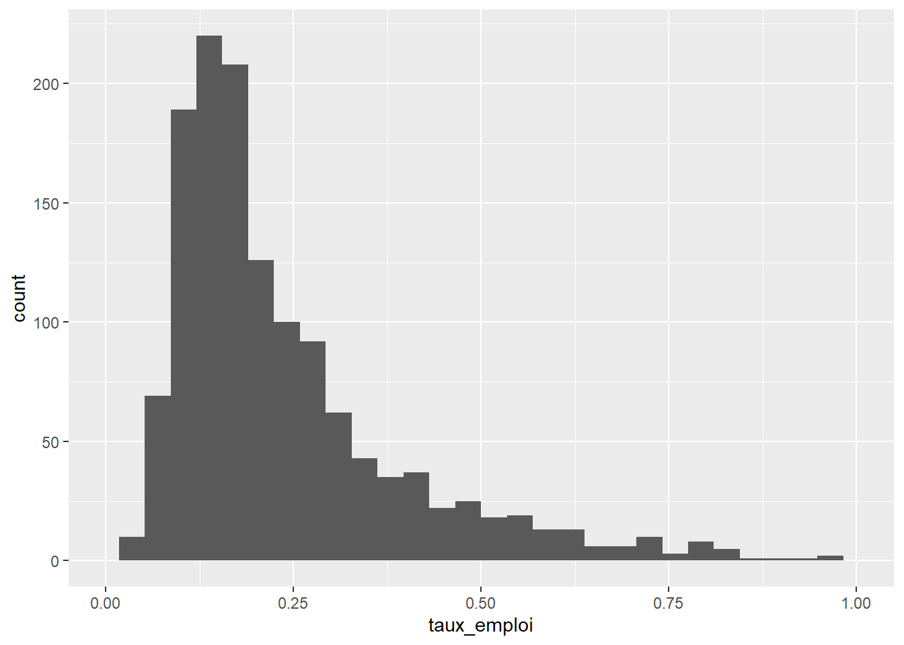
ggplot (data = data_p4, aes (x = densite_pop)) +
geom_histogram () +
scale_x_continuous (trans = 'log', breaks = c(1,10,100,1000))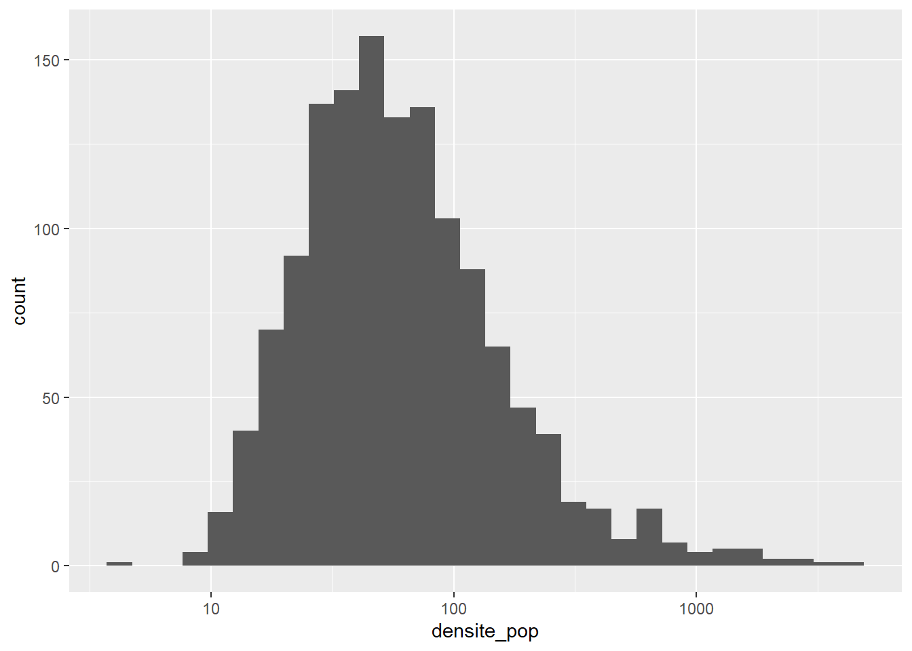
Ces distributions ne sont pas trop normales à première vue. Mais en testant ?
##
## Shapiro-Wilk normality test
##
## data: data_p4$taux_emploi
## W = 0.77523, p-value < 2.2e-16##
## Shapiro-Wilk normality test
##
## data: data_p4$densite_pop
## W = 0.31672, p-value < 2.2e-16C’est confirmé -> en toute rigueur, test non paramétrique. On regarde aussi le nuage de points.
ggplot (data=data_p4, aes (x = densite_pop, y = taux_emploi)) +
geom_point () +
scale_x_continuous (trans = 'log10') +
scale_y_continuous (trans = 'log10') +
geom_smooth (color = 'orange')+
geom_smooth (method = 'lm', color = 'blue')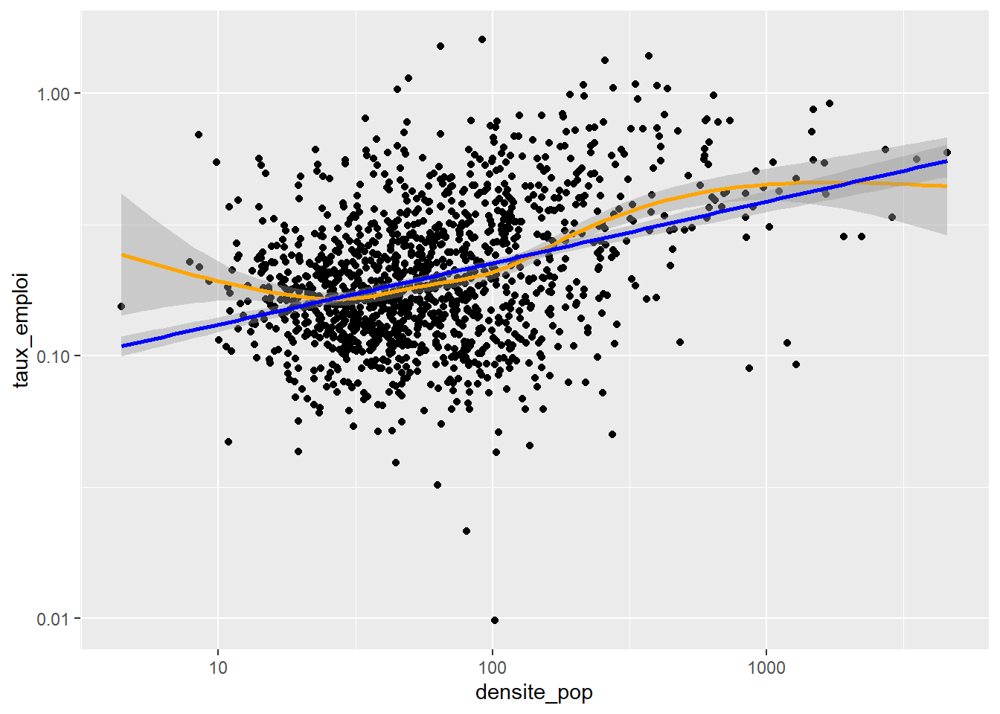
cor (x = data_p4$taux_emploi,
y = data_p4$densite,
use = "pairwise.complete.obs",
method = "spearman")## [1] 0.3121057Conclusion : Le coefficient de corrélation est positif, faible mais non négligeable. Les variables tendent à varier dans le même sens.
Est-ce que la variable densite contribue significativement à expliquer la variabilité de la variable taux_emploi ?
Pour répondre à cette question, on est bien embêtés dans un cadre non paramétrique. Pour l’approcher, on peut donc faire comme si on n’avait pas vu que les distrubutions des variables n’étaient pas normales.
##
## Call:
## lm(formula = log(taux_emploi) ~ log(densite_pop), data = data_p4)
##
## Residuals:
## Min 1Q Median 3Q Max
## -3.14328 -0.37613 -0.02266 0.36720 2.00382
##
## Coefficients:
## Estimate Std. Error t value Pr(>|t|)
## (Intercept) -2.56785 0.06862 -37.42 <2e-16 ***
## log(densite_pop) 0.23434 0.01625 14.42 <2e-16 ***
## ---
## Signif. codes: 0 '***' 0.001 '**' 0.01 '*' 0.05 '.' 0.1 ' ' 1
##
## Residual standard error: 0.5732 on 1355 degrees of freedom
## (145 observations deleted due to missingness)
## Multiple R-squared: 0.133, Adjusted R-squared: 0.1323
## F-statistic: 207.8 on 1 and 1355 DF, p-value: < 2.2e-16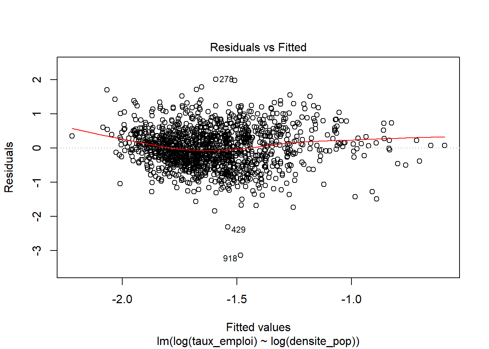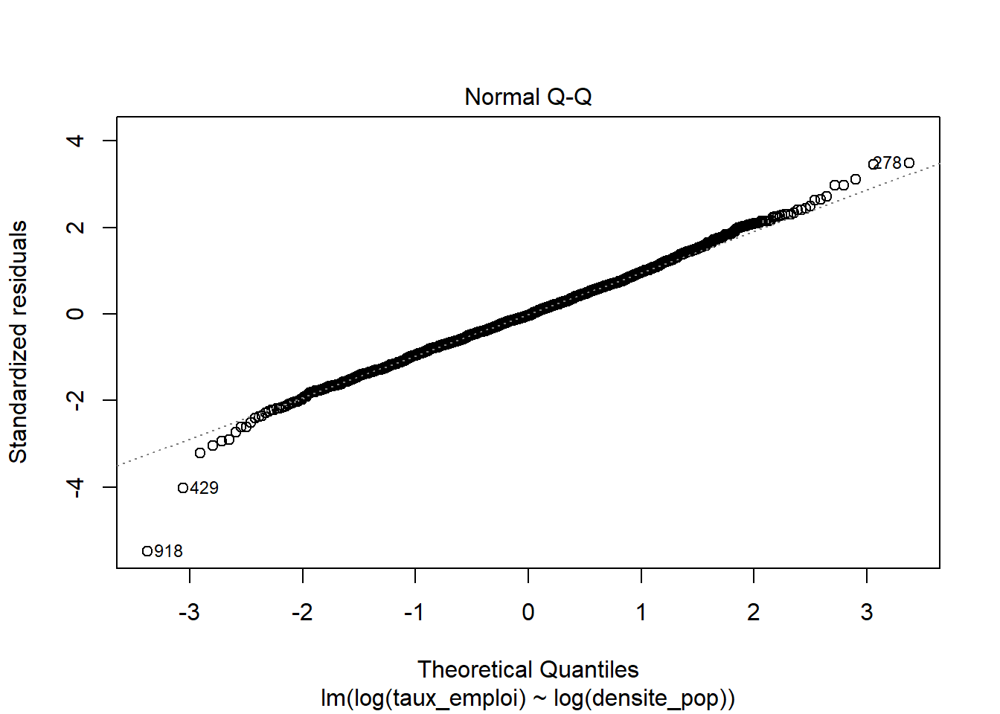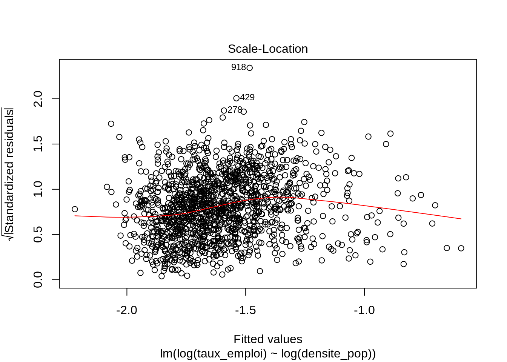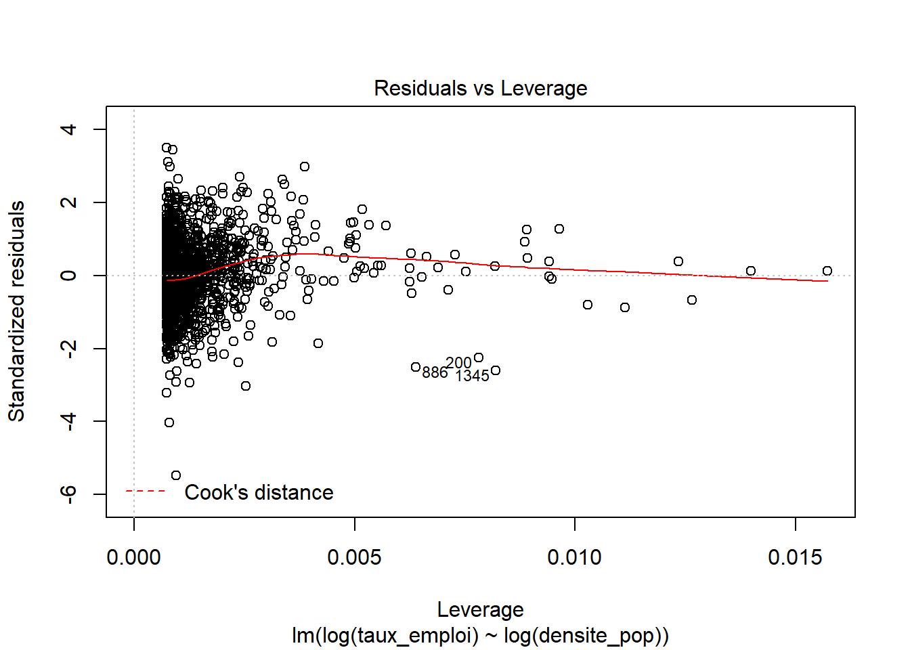
residus <- modele$residuals %>%
as.data.frame () %>%
rename (valeurs_residus = '.')
ggplot (data = residus, aes (x = valeurs_residus)) +
geom_histogram () +
geom_vline (xintercept = 0, color = 'red')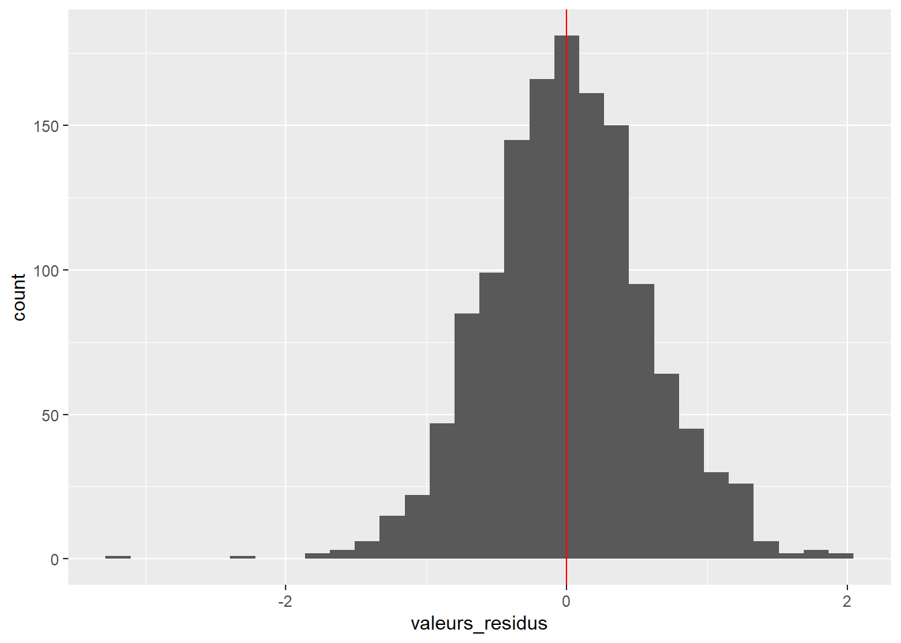
Les graphiques montrent que :
on a à peu près indépendance entre les valeurs prédites et les résidus
les résidus sont à peu près distribués normalement avec une distribution centrée en zéro
on a quelques points avec des bras de leviers (distance de Cook) importants, mais le modèle les prédit bien.
Donc ce modèle n’est pas catastrophique. On peut s’aventurer à lire les valeurs des coefficients et le R2 ajusté qui vaut 0,1323. Le taux d’emploi tend à augmenter avec la densité de population, selon une relation log-log.